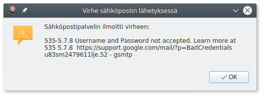

Sähköpostin lähetys¶

Kitupiikillä on mahdollista lähettää laskut suoraan sähköpostiin. Jos tätä toimintoa haluaa käyttää, on ohjelmassa määritettävä sähköpostin asetukset.
- Palvelin: Lähtevän sähköpostin palvelimen osoite, löytyy sähköpostin tai internetyhteyden ohjeista. Sähköpostin lähetys on testattu toimivaksi ainakin Elisan ja Gmailin postipalvelimilla.
- Portti: Lähtevän sähköpostin portti palvelimella, suojatussa sähköpostissa yleensä 465 ja suojaamattomassa 25.
- Käyttäjänimi: Käyttäjänimi palvelimella palveluntarjoajan vaatimassa muodossa
- Salasana: Sähköpostin salasana. Gmailissa tähän syötetään sovellussalasana.
- Viestin lähettäjän nimi ja osoite: Viesteissä näkyvät tiedot. Jotkut sähköpostipalvelut vaativat kyseisen palvelun sähköpostiosoitteen käyttämistä.
Suojattu sähköposti
Kitupiikki tukee suojattua sähköpostia, mutta tarvitsee sitä varten OpenSSL-kirjastoa. Jos oikeaa versiota kirjastosta ei ole saatavilla, näkyy se sähköpostiasetusten sivulla. Ilman OpenSSL-kirjastoa voit lähettää suojaamatonta sähköpostia (smtp-palvelin portissa 25).
Kun olet syöttänyt asetukset, paina Kokeile-painiketta, joka yrittää lähettää sähköpostin omaan osoitteeseesi. Jos lähetys epäonnistuu, saat siitä ilmoituksen

Tässä tapauksessa käyttäjätunnus tai salasana on väärin.
Jos lähetys onnistuu, tulee Kokeile-napin vasemmalle puolelle teksti Sähköposti lähetetty, ja löydät testiviestin postilaatikostasi.